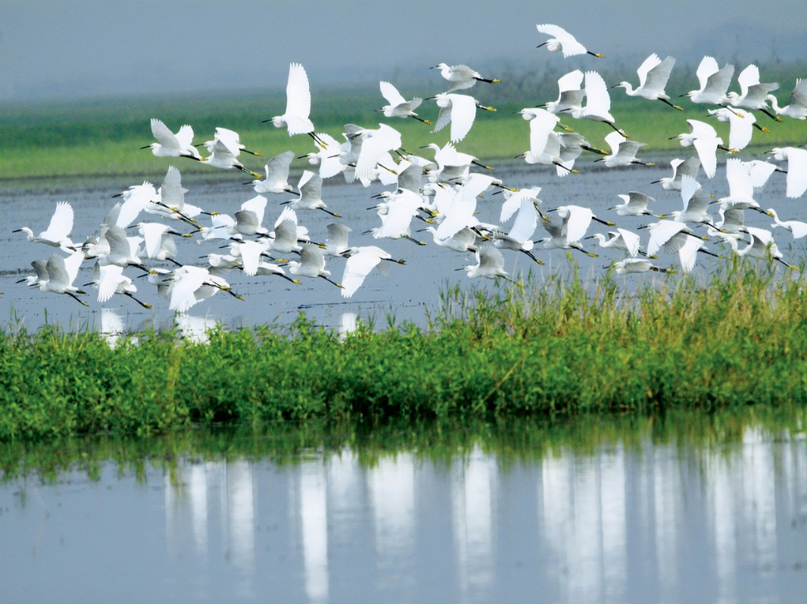

湖南南洞庭湖湿地和水禽自然保护区
Hunan South Dongting Lake wetland and waterfowl nature reserve
湖南洞庭湖位于中国第一大淡水湖泊——洞庭湖西南，面积1680平方公里。已被国家列为“湿地和水禽自然保护区”，南洞庭湖是一座大自然的迷宫，生态环境优良的湖泊湿地，浩渺无垠的水域，翠绿浑圆的丘岗山地，风情万种的湖汊半岛，生活着多种珍稀濒危水禽和其它野生植物。
保护区内鸟类资源极其丰富，据调查记录表明，本区有鸟类16目43科164种，其中鸭科30种，鹬科19种，鹭科14种，鹰科6种，隼科4种，雉科3种，雀科4种，秧鸡科9种，杜鹃科4种，翠鸟科4种，反嘴鹬科3种，伯劳科3种，鸦科6种。据专家测算，在此越冬的候鸟有1000万只左右，国家重点保护的鸟类有白鹳805只，黑鹳300只，白头鹤200只，白鹤400只，白琵鹭1000多只，大鸨30只，白忱鹤400只，天鹅400多只，灰鹤1000只，中华秋沙鸭20多只，白额雁30000只，豆雁35000只。
